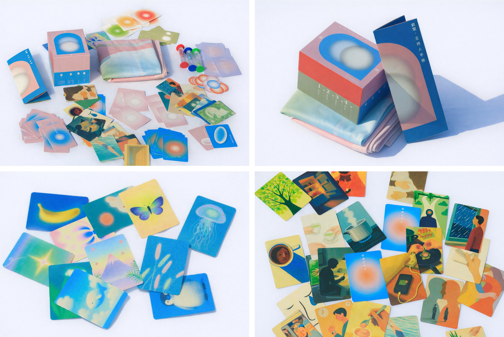

Narrative Room is a lightweight service system designed for young people navigating transitional periods, such as gap years or career changes. Centered around a replicable card-based toolkit, it combines spatial setup and facilitation scripts to create a temporary yet structured narrative container within shared community spaces. Over a 90–120 minute session, Narrative Room invites participants to revisit and reorganize their personal experiences through storytelling, recognize their own strengths, and establish initial bonds of mutual support with peers.
For community organizers, it functions as an accessible tool for activating participation within existing programs. For the community as a whole, it acts as a form of social infrastructure—one that gathers stories, fosters connection, and nurtures a sense of collective support. At its core, the project creates an opportunity for individuals to articulate who they are, encounter others in similar moments of transition, and take a small but meaningful step forward. At the same time, it plants the seeds for more sustainable relationships within the community.



Where Within began from a question of how one might reconnect with the overlooked textures of urban life. Instead of treating the city as a fixed environment to move through, the project approached it as a field of unstable relations, rhythms, interruptions, and traces. Public interventions became a way of listening to the city differently, not through efficiency or navigation, but through pause, drift, and embodied attention.
The process was collaborative and improvisational. Spoken poetry, movement, and sound experiments were used as tools to activate spaces otherwise experienced as transitional or anonymous. These actions did not aim to dominate the site, but to remain porous to it — allowing the environment, its noises, constraints, and accidental encounters to shape the work in return.
The later exhibition format assembled fragments from different urban sites into a shared spatial narrative. Documentation, collected audio, text, and visual materials were brought together not as a singular conclusion, but as an open structure through which viewers could move between field experience and retrospective reflection.
In this sense, Where Within is not only a project about urban space, but also about modes of co-presence: how temporary gatherings, situated gestures, and partial translations may generate other ways of sensing place, authorship, and collective imagination.